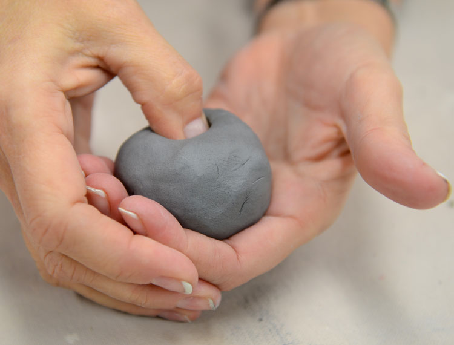
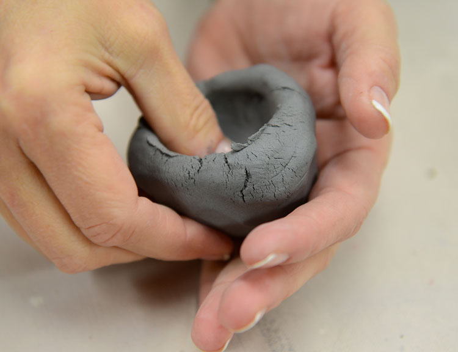
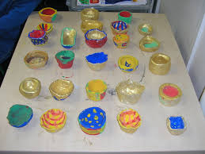

| Step 1 |
 |
Create a ball of red clay. |
| Step 2 |
 |
Cup the ball in your hand. Next, gently
press your thumb into the center of the ball
to create an opening. Leave at least 3/8 of
an inch (1 centimeter) of clay at the bottom
to form the base of the pot. |
| Step 3 |
 |
Use gentle pinching motions and work in circles to thin
on the sides at the same rate. Keep
pinching until the walls are as thin as
you’d like them. Smooth out any cracks in the clay
with your fingers after you’ve finished
forming the pot. |
| Step 4 |
 |
Set the pot in a low-traffic location and
cover it with a lightweight hand towel. When
the pot is leather hard, it will be cool to
the touch and firm like a block of cheese. |
| Step 5 |
 |
Once the pot is leather hard, you can
smooth the surface and add embellishments. |
| Step 6 |
 |
Let the pot become “bone dry.” |
| Step 7 |
 |
Refer to your package of clay to see what
temperature to set your oven to. Once your
oven has preheated to the right temperature,
place your pottery on a baking sheet and put
it in your oven. Refer to the manufacturer
instructions for cooking times. |
| Step 8 |
 |
Decorate your pot any way you'd like. |